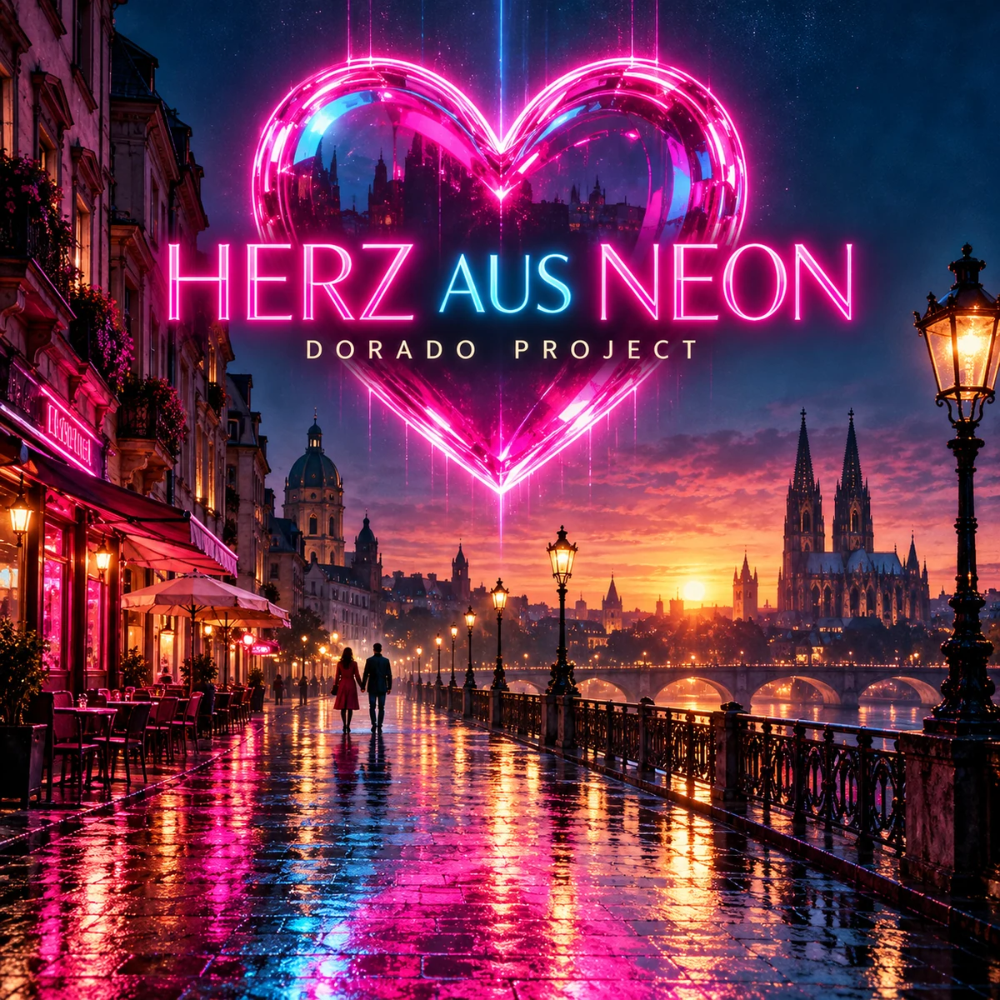

IN PRODUCTION · SYNTHPOP
Herz aus Neon
Synthpop / Neue Deutsche Welle / Schlager-pop
A neon-lit synthpop anthem with German verses, an English singalong hook and a powerful female vocal. Pulsing analog synths, driving rock guitars, a melodic guitar solo and a soaring chorus turn a spontaneous night together into pure euphoria.
Spotify link to follow when the track is available.